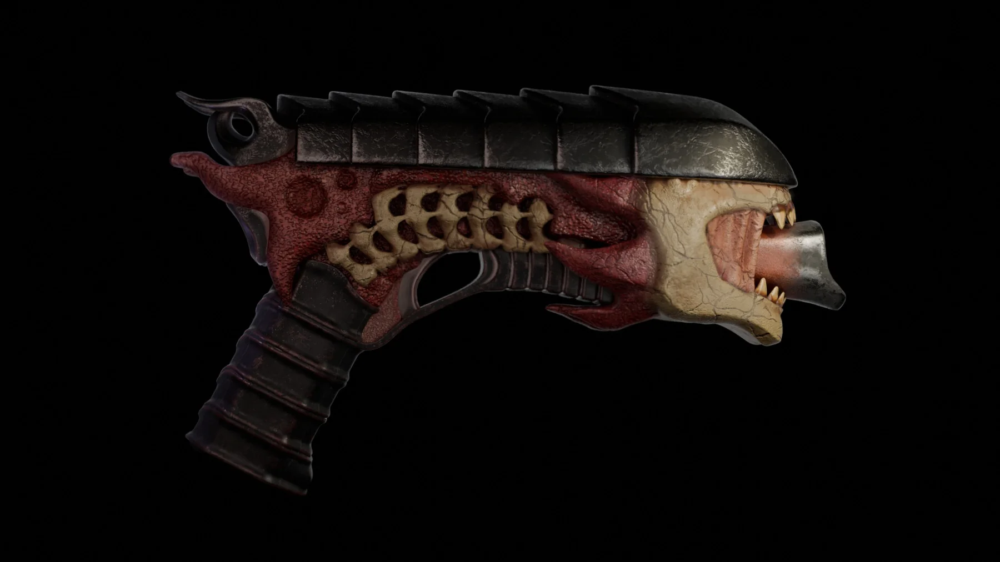

Vera
Napalkova
Stylized 3D Artist — props, environments and characters. I build cozy-to-creepy fantasy worlds with an illustrator’s eye for story, shape and color.Стилизованный 3D-художник: пропсы, окружение и персонажи. Собираю уютные и жутковатые фэнтези-миры с подходом иллюстратора к истории, форме и цвету.
Every asset should tell a bit of the story: a silhouette you read at a glance, materials you can almost touch, and a palette that ties the whole scene together.Каждый ассет должен рассказывать кусочек истории: силуэт, который читается с первого взгляда, материалы, которые хочется потрогать, и палитра, которая собирает сцену в одно целое.
3D Projects3D-проекты
Props and environments first, characters next. Click a project for close-ups and details.Сначала пропсы и окружение, затем персонажи. Внутри каждого проекта крупные планы и детали.
The Horned Shopkeeper

Bone Pistol

Autumn Island

Horned Automaton

Masked Imp
What I bringЧто я делаю
Strong art foundation from illustration, applied to stylized 3D for games and animation.Сильная художественная база из иллюстрации, применённая к стилизованному 3D для игр и анимации.
Stylized propsСтилизованные пропсы
Hero props and prop sets with readable silhouettes and clear material separation.Хиро-пропсы и наборы предметов с читаемым силуэтом и понятным разделением материалов.
EnvironmentsОкружение
Story-driven interiors and dioramas: set dressing, mood, light and color.Сюжетные интерьеры и диорамы: наполнение сцены, настроение, свет и цвет.
CharactersПерсонажи
Stylized characters and creatures, from a 2D character sheet to a 3D model.Стилизованные персонажи и существа, от 2D-листа персонажа до 3D-модели.
Art foundationРисунок
Drawing, composition and color. I can sketch and concept my own assets.Рисунок, композиция и цвет. Могу сама сделать скетч и концепт для своих ассетов.
2D roots2D-база
Before 3D: illustration commissions, character sheets and comic pages (2023–2025).До 3D: заказы на иллюстрации, листы персонажей и страницы комикса (2023–2025). See 2D →Смотреть 2D →


I came to 3D from illustration, so I think in stories, silhouettes and color first.Я пришла в 3D из иллюстрации, поэтому сначала думаю историей, силуэтом и цветом.
Since 2023 I’ve been working on illustration commissions: character sheets, story illustrations and comic pages. Now I build stylized 3D props, environments and characters, and I’m looking for a team where I can grow on real production assets.С 2023 года работаю на заказах по иллюстрации: листы персонажей, сюжетные иллюстрации и страницы комикса. Сейчас создаю стилизованные 3D-пропсы, окружение и персонажей и ищу команду, где смогу расти на реальных продакшн-ассетах.
I’m comfortable with feedback, references and art direction, and I care about the asset reading well in the final frame.Спокойно работаю с правками, референсами и арт-дирекшеном, и мне важно, чтобы ассет хорошо читался в финальном кадре.
Let’s make
something cozy.Сделаем
что-то уютное.
Open to junior 3D artist roles, art tests and paid freelance tasks. Fastest reply in Telegram.Открыта к junior-позициям 3D-художника, тестовым заданиям и оплачиваемым задачам. Быстрее всего отвечаю в Telegram.